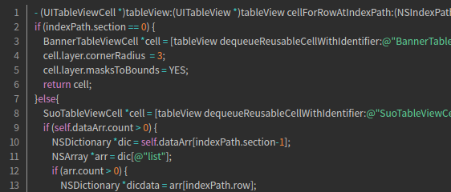
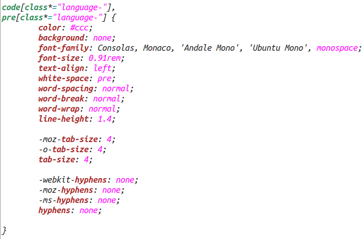
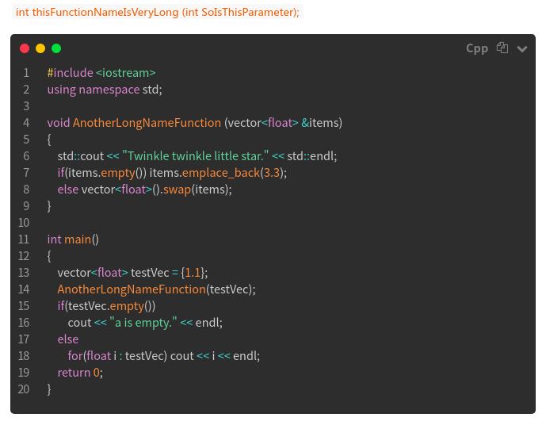
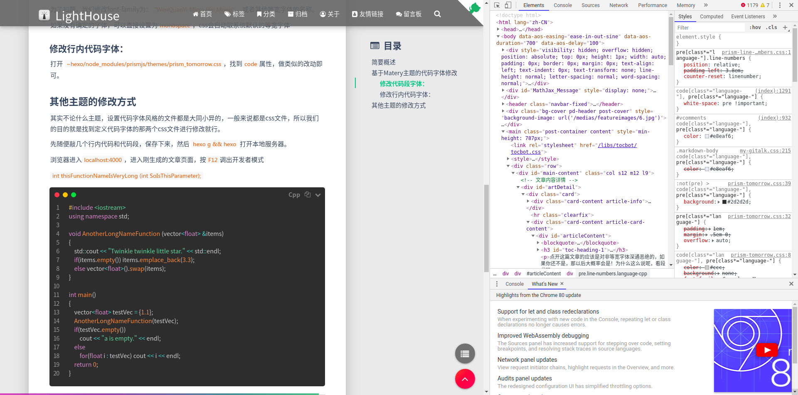
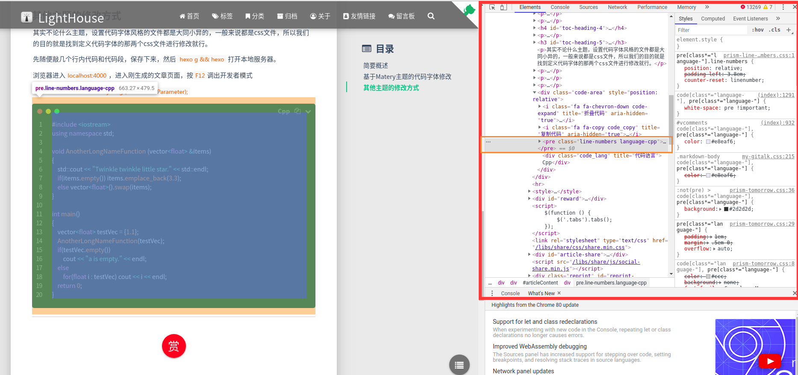
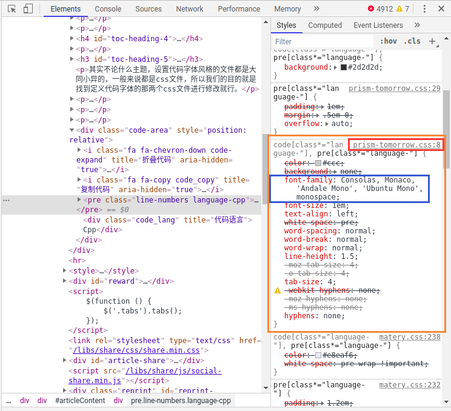
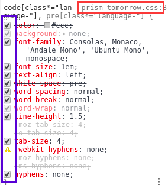
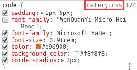

本文介绍了Hexo代码段字体的修改方式。
ps: 偶然发现按照本文的方式改动，如果你安装的字体不是系统自带的，那么只有你自己的电脑能看到效果，别人还是只能看到非等宽的默认字体。经过稍加思考，我发现部署之后读取字体的方式还是从本地读，即使我把ttf一起传上去也没用，看来是需要修改别的东西，挖个坑以后再填。
简要概述
点开这篇文章的应该是对非等宽字体深通恶绝的，比如这段代码：

要是看这样的代码觉得非常舒适，那这篇文章对你的价值就要趋近于零了，建议看看别的！
基于Matery主题的代码字体修改
该栏目下的方法介绍基于Matery主题，如果所用主题不是Matery，可以先试一试，或者直接移步下方栏目。
熟悉markdown的朋友都知道，在md中代码的格式有两种，一种是行内代码，如：print("hello world!")，一种是代码段：
1 | def display(): |
在css中这两种格式的代码属性是分开定义的，意味着我们要修改两处。
代码段字体：
打开
~hexo/node_modules/prismjs/themes/prism_tomorrow.css，找到code属性：

这里的所有属性我们都可以按照自己的喜好修改，各个属性的名称也一看就懂。
为了扣题，我们修改font-family为："Courier"，或者其他等宽字体的名称。
如果没有确定的字体，可以直接设置为monospace，css会自动取系统默认的等宽字体
行内代码字体：
打开
~hexo/theme/matery/source/css/matery.css，找到code属性，做类似的改动即可。
其他主题的修改方式
代码段字体
其实不论什么主题，设置代码字体风格的文件都是大同小异的，一般来说都是css文件，所以我们的目的就是找到定义代码字体的那两个css文件进行修改就行。
先随便敲几个行内代码和代码段，保存下来，然后
hexo g && hexo 打开本地服务器。
浏览器进入localhost:4000，进入刚生成的文章页面查看代码样式，假设如下：

现在我们按F12进入开发者模式，右栏可见html和css样式以及其对应的文件名：

右键点击代码块，选择"检查"（ps: 我使用的浏览器是Chrome，其他浏览器大同小异），右栏会自动指向对应代码块的css属性：

如图所示，左侧是html的元素，右侧是对应的css属性

我们更关注右侧的css模块，把鼠标移动到这些属性上，点击左侧的方格可以去掉或者增添该样式，同时能够非常直观地在左侧页面看出每个属性的效果。我们只需找出影响代码字体样式的属性即可：

这段就是影响代码段字体风格的css属性了，其中 font-family
就是我们想要的元素，而右上角的 prism-tomorrow.css
就是我们要找的文件，直接顺藤摸瓜，在Hexo路径下搜索该文件打开它（不要选public文件夹下的，clean命令清空它），找到
code 属性：
修改font-family为："Courier"，或者其他等宽字体的名称。
如果没有确定的字体，可以直接设置为monospace，css会自动取系统默认的等宽字体
行内代码字体
以同样的方式，右键点击行内代码，一样很容易找到对应的css文件：

找到文件后的操作就基本一样了。
修改完毕后，hexo cl && hexo g && hexo s
看看效果把！
int thisFunctionNameIsVeryLong (int SoIsThisParameter);
1 |
|